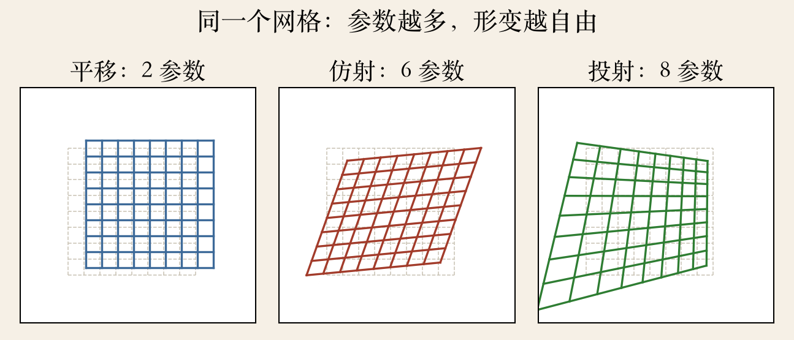
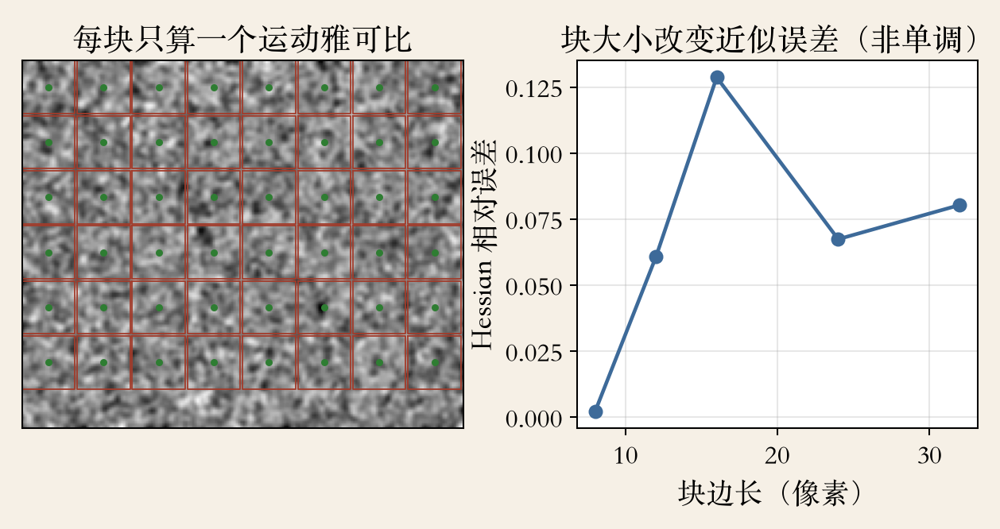
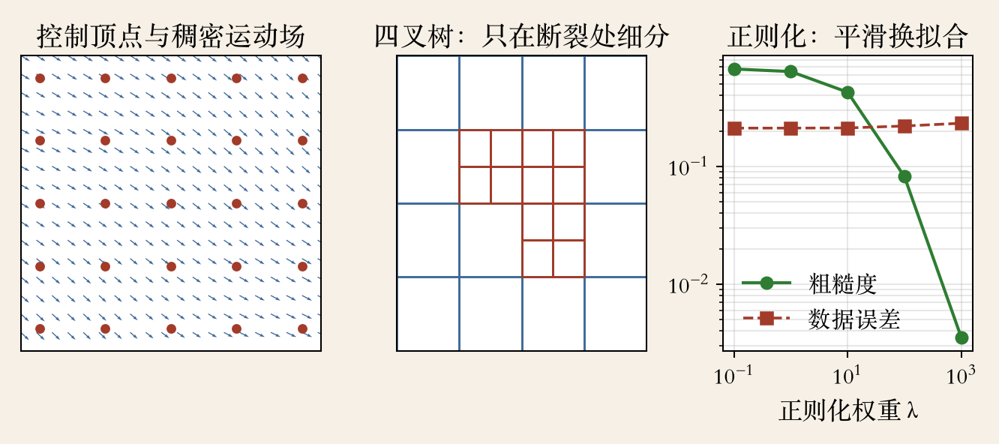

开场 · 参数运动
从一个向量到一组参数
上一集把平移对齐做到亚像素。
手持拍摄会转、会缩放、会斜扫。
未知量从一个向量换成参数向量。
这一集：运动场、雅可比、样条。
依据：原书第 570–573、575–578 页
三条线
运动场 x′(x;p)
雅可比链式相乘
样条补中间地带
正课第七十七集
01 / 16
问题 · 全搜索不可行
八个参数不能靠全搜索
拼接需要比平移更复杂的模型。
仿射的参数比纯平移多。
六到八个参数一起试是指数爆炸。
改为在初值附近增量线性化。
依据：原书第 570 页
怎么做
当前参数附近展开
解一个线性最小二乘
再迭代修正
正课第七十七集
02 / 16
参数运动族 · 程序生成
三种模型：自由度递增
平移只改位置，两个参数。
仿射可拉伸、旋转、斜切，六个参数。
投射再加近大远小，八个参数。
参数越多越自由，也越容易过拟合。
依据：本集实验

同一个网格：平移、仿射、投射｜程序生成，未用教材或论文原图
正课第七十七集
03 / 16
运动场
运动场：p 控制采样位置
不再用一个常数平移向量。
写成 x′(x;p)，由低维 p 控制。
x′ 可以是第 2 章任一运动模型。
p 等于零时正好是单位变换。
依据：原书第 571 页
含义
p 是旋钮
x′ 是采样去处
初值从零开始
正课第七十七集
04 / 16
雅可比 · 链式法则
雅可比：梯度乘运动雅可比
J1 等于图像梯度乘 ∂x′/∂p。
梯度管亮度往哪变。
运动雅可比管采样点往哪动。
平移时它退化成两列常数。
依据：原书第 571 页式 9.45
J₁ = ∇I₁ · ∂x′/∂p
∇I₁：图像梯度；∂x′/∂p：运动场雅可比
正课第七十七集
05 / 16
分块 Hessian · 程序生成
分块：省外积，不省像素
参数运动的 Hessian 比平移贵。
块内只累加 2×2 梯度外积。
块中心再乘一次运动雅可比。
块边长 24：误差 0.067，成本一成。
依据：原书第 571–572 页；本集实验

分块近似：每块一个运动雅可比，块大小影响误差与成本｜程序生成，未用教材或论文原图
正课第七十七集
06 / 16
法方程
法方程：形状没变
A 夹着运动雅可比和梯度外积。
b 是负残差乘梯度。
方括号里与平移情形同形。
A 从 2×2 变成 6×6、8×8。
依据：原书第 571 页；本集实验
实测
雅可比误差约 10⁻¹⁰
Hessian 最小特征值 3.788
正定，小步稳定
正课第七十七集
07 / 16
复合与逆向复合
复合：把贵活挪出循环
单应雅可比复杂，还可能每像素除法。
先把目标图 warp 到模板坐标。
逆向复合改为 warp 模板。
逆 Hessian 和最速下降图可预算。
依据：原书第 572–573 页
区别在谁动
正向复合每步 warp 目标图
逆向复合预先固定模板
代价是假设光照变化小
正课第七十七集
08 / 16
学习运动基
学习基：用统计先验
从训练视频算一堆稠密运动场。
堆起来做奇异值分解 SVD。
取前几个奇异向量当基。
新视频只估几个系数。
依据：原书第 573 页
边界
几何先验之外的另一条路
走路、跑步各有各的基
换场景不一定灵
正课第七十七集
09 / 16
低维模型的边界
低维模型装不下复杂运动
防抖、平面贴图里参数模型好用。
大多数图像运动太复杂。
光流每像素一个位移，未知数翻倍。
问题欠约束，需要中间地带。
依据：原书第 575 页
两端
低维：全局一个规矩
光流：每像素各管各
样条：少量顶点管一片
正课第七十七集
10 / 16
样条运动 · 程序生成
样条：少量顶点管一片
运动场写成控制顶点的线性组合。
每个像素受周围几个顶点影响。
运动不连续处基本样条吃力。
四叉树：大格平滑区，小格断裂区。
依据：原书第 575、577 页；本集实验

样条：控制顶点、四叉树细分与正则化权衡｜程序生成，未用教材或论文原图
正课第七十七集
11 / 16
稀疏线性系统
稀疏系统：每像素只连几个顶点
样条代进 SSD，雅可比变稀疏项。
线性系统稀疏、规则。
中等规模可直接 Cholesky 分解。
太大再用预处理共轭梯度。
依据：原书第 576 页
提醒
大片无纹理要正则
长边缘跨块也病态
多分辨率要缩放正则
正课第七十七集
12 / 16
四叉树与医学配准
四叉树细化与医学配准
低分辨率规则样条先估初值。
残差超阈值的块再细分。
父子约束防止裂缝。
医学配准用互信息做相似度。
依据：原书第 577–578 页
分工
样条管怎么变形
互信息管像不像
CT 看骨密度，MRI 看软组织
正课第七十七集
13 / 16
参数运动实验 · 由粗到细
实验：粗估给初值
合成纹理图，真值是仿射。
平移 2.3 与 −1.7，约 6% 拉伸。
零初值直接解六参数会跑偏。
半分辨率粗估后误差小于 0.001。
依据：本集实验
读数
粗层残差降 9.2 倍
粗层参数误差 0.00424
全分辨率误差 0.00015
正课第七十七集
14 / 16
分块与样条实验
实验：近似与正则的账
分块把六乘六外积成本降到约一成。
块边长 24，Hessian 误差 0.067。
用近似解，参数误差小于 0.001。
5×5 控制顶点重建到机器精度。
依据：本集实验
读数
粗糙度比 0.005
数据误差比 1.10
误差与成本一起报
正课第七十七集
15 / 16
收束 · 下一集特征跟踪
参数、雅可比、样条
未知量从向量换成参数向量。
雅可比把梯度和运动场接起来。
低维不够时，样条补中间地带。
下一集：特征跟踪 KLT。
依据：原书第 570–578 页；下一集原书第 452 页
下一集
第 7 章特征跟踪
每个特征点周围小窗口
孔径与漂移成主角
正课第七十七集
16 / 16